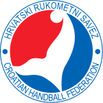

Hrvatska rukometna reprezentacija predstavlja Republiku Hrvatsku na međunarodnim natjecanjima u rukometu. Krovna organizacija je Hrvatski rukometni savez. Moderna hrvatska reprezentacija je osnovana 1991. godine, nedugo nakon što je Hrvatska 1990. proglasila razdruženje od Jugoslavije, a 1992. godine službeno je postala članicom Međunarodne rukometne federacije (IHF-a) i Europske rukometne federacije (EHF-a).
Francuska rukometna reprezentacija predstavlja državu Francusku u športu rukometu. Godine 2010. postali su prva muška rukometna reprezentacija koja je uzastopno osvojila zlato na Olimpijskim igrama (2008.), svjetskom prvenstvu (2009.) i europskom prvenstvu (2010.) i time postala jedina muška rukometna reprezentacija koja je u određenom periodu bila branitelj naslova na svim velikim rukometnim natjecanjima istovremeno.
Moj telefonski broj: 098 963 4008
Email adresa: lvcelik8@gmail.com